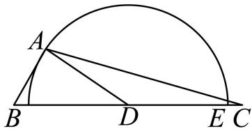
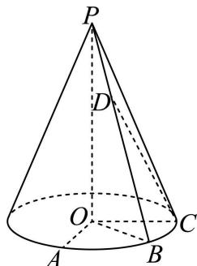

01 【来源：虹口26二模·1】
查看所属专题设全集为 ，集合 ，则 ______。
作答区
整卷阅读 · 学生版 · 21 题
按来源题号排列；内容来自分类汇编，仍需回源核对。
没有找到匹配题目。
设全集为 ，集合 ，则 ______。
已知一个直三棱柱的侧棱长为 2，底面面积为 2，则该三棱柱的体积为______。
已知离散型随机变量 服从二项分布 ，则 ______。
设 ，，若 是 的必要条件，则实数 的取值范围是______。
某工厂为判断两种不同的操作方法是否对生产某种零件的合格个数有影响，收集了相关数据，绘制了 列联表，设原假设 ：两种不同的操作方法对生产该种零件的合格个数没有影响，计算出统计量 ，已知 ，则在显著性水平 下，推断的结论为______ 。（用“拒绝”或“接受”填空）
在 中，，，，则 ______。
将 二项展开式中的各项等可能地随机重新排列，观察排列中是否存在系数为负数的项相邻，若存在，则记随机变量 ，否则记 ，则 ______。
在正四棱台 中，，，异面直线 与 所成角为 ，设二面角 的大小为 ，则 ______。
已知复数 满足 是实数，则 的最小值为______。
已知焦点为 的抛物线 上有两点 和 ，且 ， 为 和 的中点，过点 作 的准线的垂线，垂足为 ，则 的最小值为______。
某种健身拉力器的手臂固定支架为 ，需运动者将肩关节放置于点 处，手肘放置于点 处，手掌放置于点 处握拳握住弹力绳的一端，弹力绳的另一端连接于点 处；保持 四点共线。将小臂视为线段 ，长度为 ，大臂视为线段 ，长度为 。在锻炼时要求保持肩关节 和手肘 不动，运用大臂力量将小臂 绕着手肘 作圆周运动，始终与 处于同一平面，弹力绳随之以紧绷状态从 拉伸至 。已知某位运动者健身时 ，当弹力绳拉至最长时，，则此时 ______度。（结果精确到 0.1 度）

在以 为原点的空间直角坐标系中，设 ，， 和 是两个点集，设 ，对任意的 ，总存在 ，使得 。若 ， 且 ，则 的取值范围是______。
双曲线 的渐近线是（ ）。
A.
B.
C.
D.
已知 和 分别表示事件 和事件 发生的概率，且 ，则在下列各项中，“ 和 独立”的充分条件是（ ）。
A.
B.
C.
D.
一定存在各项均为正数且不为常数列的无穷等差数列 ，使得（ ）。
A. 为严格增数列；
B. 为公差不为零的等差数列；
C. 为等比数列（其中 ）；
D. 为周期数列。
设 和 是两个不同的函数，且定义域和值域均为 ，设 ，则对于以下两个结论，说法正确的是（ ）。
结论①：若当 ，恒有 ，则函数 一定是偶函数；
结论②：若当 ，恒有 ，则函数 可以不是偶函数。
A. ①和②都正确
B. ①正确，②错误
C. ①错误，②正确
D. ①和②都错误
如图，在底面半径为 2，侧面积为 的圆锥 中， 为底面圆周上不同的三个点，。

（1）求直线 与平面 所成角的正弦值；
（2）设点 为线段 上的动点（不含端点 和 ），求证直线 与 不垂直。
班主任小明查阅了某大学发表的一项本市高三学生手机使用情况的研究报告。报告指出，高三学生每周手机使用时长 （单位：小时）总体上服从正态分布 。
（1）小明老师将自己所带班级（共 50 名学生）视为从本市高三学生总体中随机抽取的一个样本，能以此正态分布模型估算出全班每周平均手机使用时长超过 16 小时的人数，在此估算基础上若在全班任选 3 位同学，则至少有 2 位同学的每周手机使用时长超过 16 小时的概率是多少？（结果用最简分数表示）
参考数据：若 ，则 。
（2）小明老师发现小虹同学每周手机使用时长超过 16 小时，对其进行疏导劝解，并跟进统计出之后 5 周小虹每周手机使用时长 与该周数学练习得分 （每周练习的难度相同且满分均为 150 分），制成表 1。以这 5 组数据建立回归方程 。请求出实数 的值。
| 表 1 | 第 1 周 | 第 2 周 | 第 3 周 | 第 4 周 | 第 5 周 |
|---|---|---|---|---|---|
| 手机使用时长 | 20 | 18 | 22 | 16 | 14 |
| 练习得分 | 80 | 88 | 73 | 92 |
（3）受到鼓励的小虹制定了寒假复习计划表递交给小明老师，严格控制手机使用时长。小明老师统计发现该计划表中若第 天能复习时长超过 5 小时（记为“高效复习”），则第 天也能“高效复习”的概率为 ；若第 天不能“高效复习”，则第 天还能“高效复习”的概率为 。设 表示第 天能“高效复习”的概率，，若 表示复习计划表第 天有效。求证：数列 是等比数列，并说明小虹的该复习计划表是否在寒假每一天均有效。
设 。
（1）解不等式：；
（2）设 ，若存在 ，使得 ，求实数 的取值范围。
设椭圆 的左顶点为 。
（1）求 的离心率；
（2）设 的左焦点为 ，上顶点为 ，若点 在 上且位于 轴右侧，，求点 的横坐标；
（3）设直线 ， 与 交于不同的两点 和 ，若点 在以 为直径的圆外，求实数 的取值范围。
若对于定义在 上的函数 ，设 是 的一个子集， 和 是 上任意给定的两个实数，当 时，恒有 ，则称函数 在 上具有“性质 ”。
（1）分别判断函数 和 是否在 上具有“性质 ”；（无需说明理由）
（2）设 ，记 若函数 在 上具有“性质 ”，求实数 的取值范围；
（3）若函数 在 上具有“性质 ”，其图像是连续曲线，且 ，求证：集合 是无限集或单元素集。